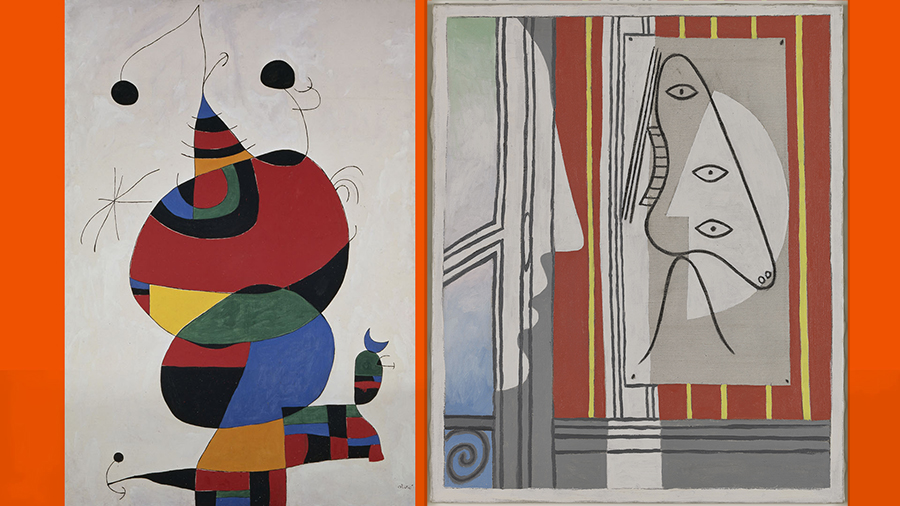

Exposición: Picasso y los Maestros

Un Diálogo a través de la Historia del Arte
La exposición "Picasso y los Maestros" ofrece una mirada inédita sobre la obra del genio malagueño, explorando los vínculos profundos y las reinterpretaciones que realizó de grandes artistas como Velázquez, El Greco y Goya. Esta muestra exclusiva llega a Asturias para ofrecer una experiencia estética que recorre la evolución del cubismo y la figuración.
A través de una cuidada selección de lienzos, dibujos y grabados, los visitantes podrán presenciar cómo Picasso "robaba" la esencia de sus predecesores para transformarla en un lenguaje totalmente nuevo y revolucionario. La exposición destaca especialmente la capacidad del artista para dialogar con el pasado mientras rompía todas las reglas del futuro.
Ubicada en el Centro de Cultura Antiguo Instituto, la muestra incluye piezas cedidas por importantes museos internacionales, convirtiéndose en el evento cultural del año para los amantes de las bellas artes. Una oportunidad única para comprender la mente de uno de los pilares del siglo XX.